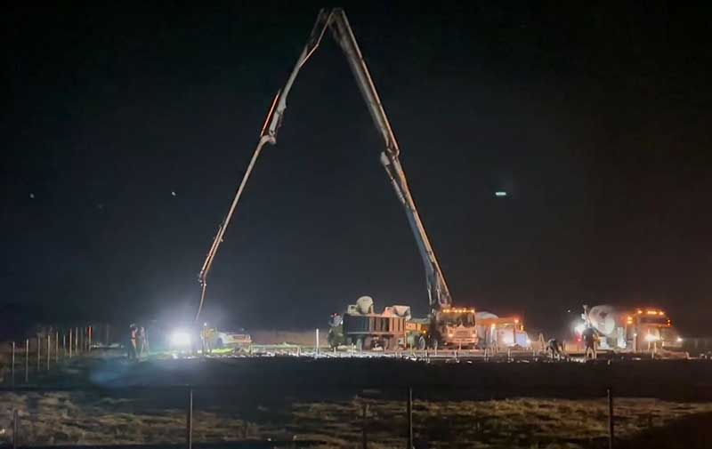
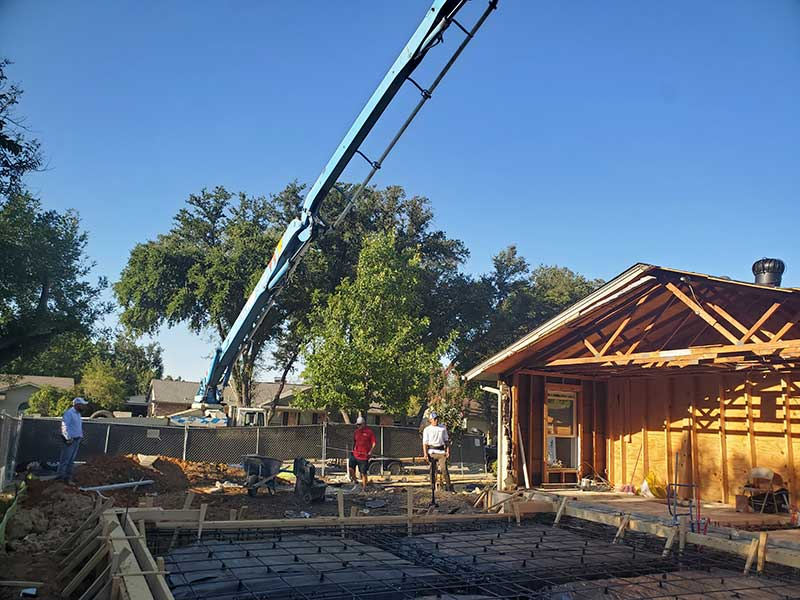
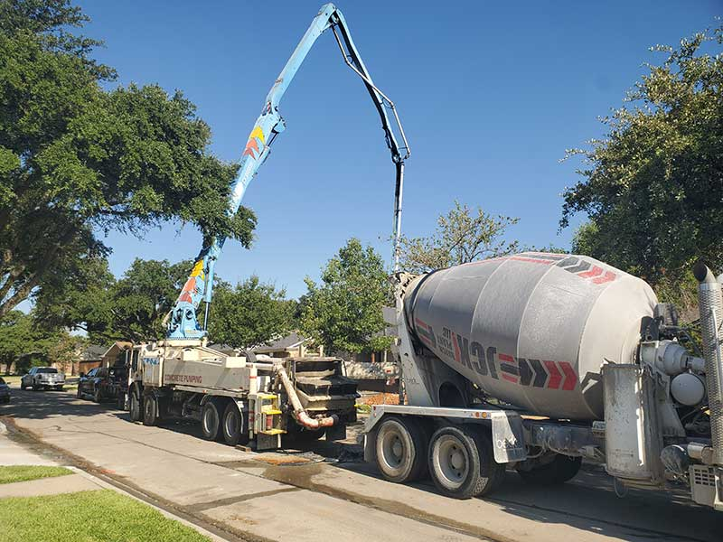
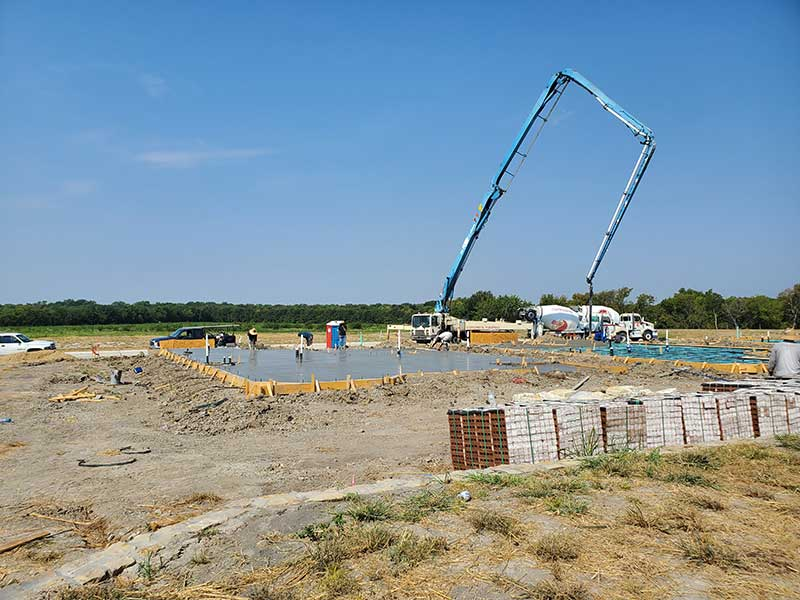
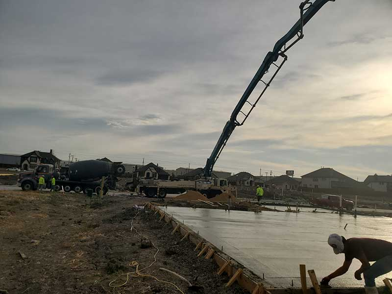
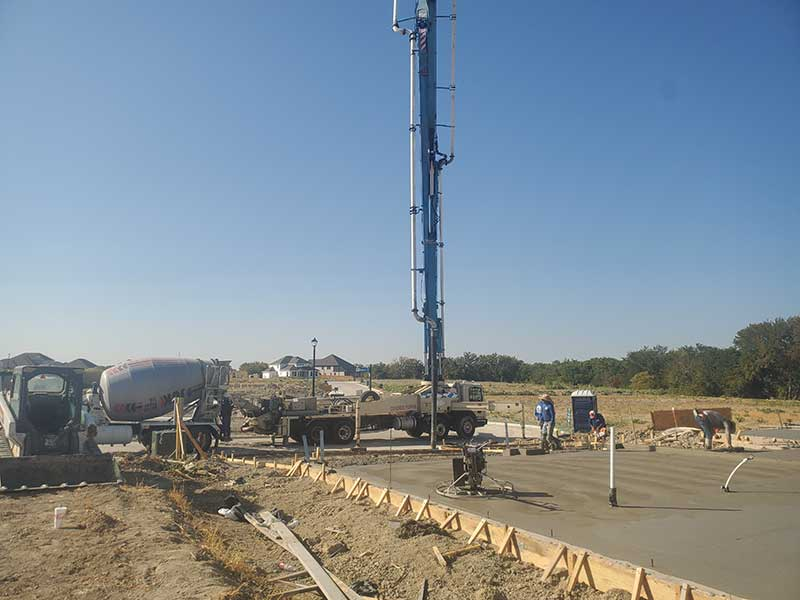
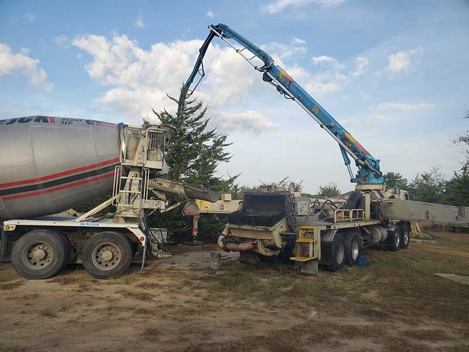

ON THE JOB
Our work
in pictures.
PROJECT GALLERY
A closer look at the equipment and the pours. Every site has its own access and placement challenges; these photos show the pump at work.







YOUR PROJECT IS NEXT
Need concrete moved?
Tell us about the site and your upcoming pour.